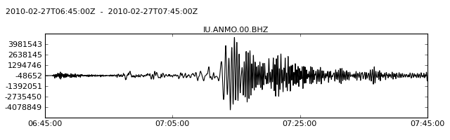
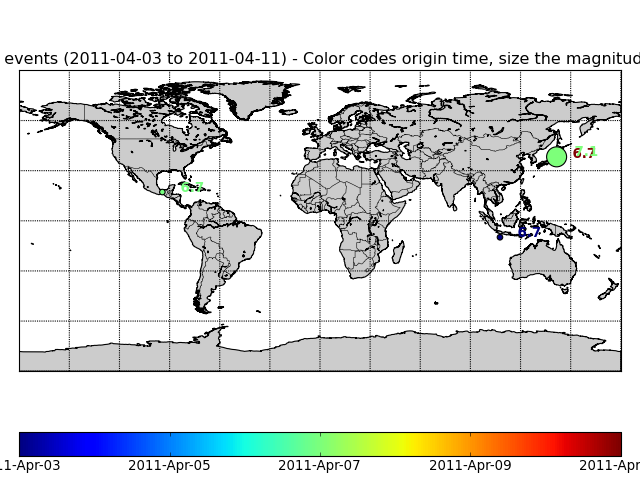

The obspy.iris package contains a client for the DMC Web services provided by IRIS (http://www.iris.edu/ws/).
| copyright: | The ObsPy Development Team (devs@obspy.org) |
|---|---|
| license: | GNU Lesser General Public License, Version 3 (http://www.gnu.org/copyleft/lesser.html) |
getWaveform(): The following example illustrates how to request and plot 60 minutes of the "BHZ" channel of station Albuquerque, New Mexico ("ANMO") of the Global Seismograph Network ("IU") for an seismic event around 2010-02-27 06:45 (UTC).
>>> from obspy.iris import Client
>>> from obspy import UTCDateTime
>>> client = Client()
>>> t = UTCDateTime("2010-02-27T06:45:00.000")
>>> st = client.getWaveform("IU", "ANMO", "00", "BHZ", t, t + 60 * 60)
>>> st.plot()

saveWaveform(): Writes the requested waveform unmodified into your local file system. Here we request a Full SEED volume.
>>> from obspy.iris import Client
>>> from obspy import UTCDateTime
>>> client = Client()
>>> t1 = UTCDateTime("2010-02-27T06:30:00.000")
>>> t2 = UTCDateTime("2010-02-27T07:30:00.000")
>>> client.saveWaveform('IU.ANMO.00.BHZ.mseed', 'IU', 'ANMO',
... '00', 'BHZ', t1, t2)
saveResponse(): Writes the response information into a file. You may choose one of the format 'RESP', 'StationXML' or 'SACPZ'.
>>> from obspy.iris import Client
>>> from obspy import UTCDateTime
>>> client = Client()
>>> t = UTCDateTime(2009, 1, 1)
>>> client.saveResponse('resp.txt', 'IU', 'ANMO', '', '*',
... t, t + 1, format="RESP")
getEvents(): Retrieves event data from IRIS. You may choose one of the format 'xml' (QuakeML format) or 'catalog' (Catalog).
>>> client = Client()
>>> starttime = UTCDateTime("2011-04-01")
>>> endtime = UTCDateTime("2011-04-15")
>>> cat = client.getEvents(starttime=starttime, endtime=endtime,
... minmag=6.7)
>>> print(cat)
4 Event(s) in Catalog:
2011-04-11T08:16:12.730000Z | +37.001, +140.401 | 6.7 MW
2011-04-07T14:32:43.290000Z | +38.276, +141.588 | 7.1 MW
2011-04-07T13:11:22.400000Z | +17.208, -94.338 | 6.7 MW
2011-04-03T20:06:40.390000Z | -9.848, +107.693 | 6.7 MW
>>> cat.plot()

Each of the following methods directly wrap a single Web service provided by IRIS (http://www.iris.edu/ws/):
Request Tools
Calculation Tools
Please see the documentation for each method for further information and examples to retrieve various data from the IRIS DMC.
| client.Client | IRIS Web service request client. |